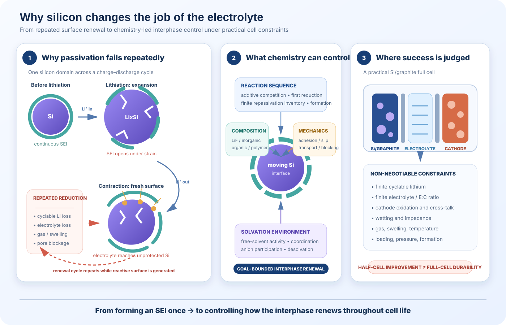
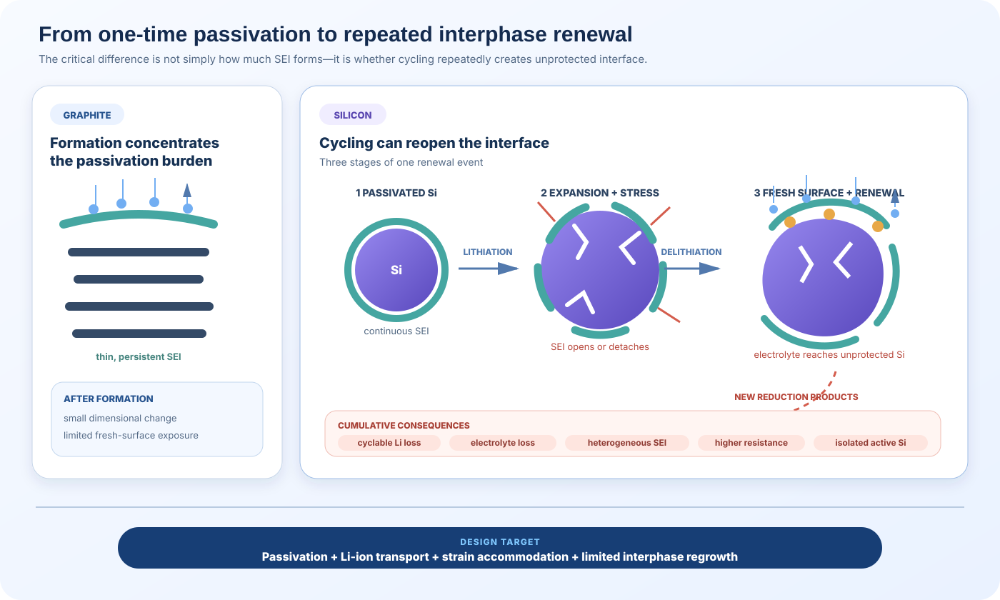
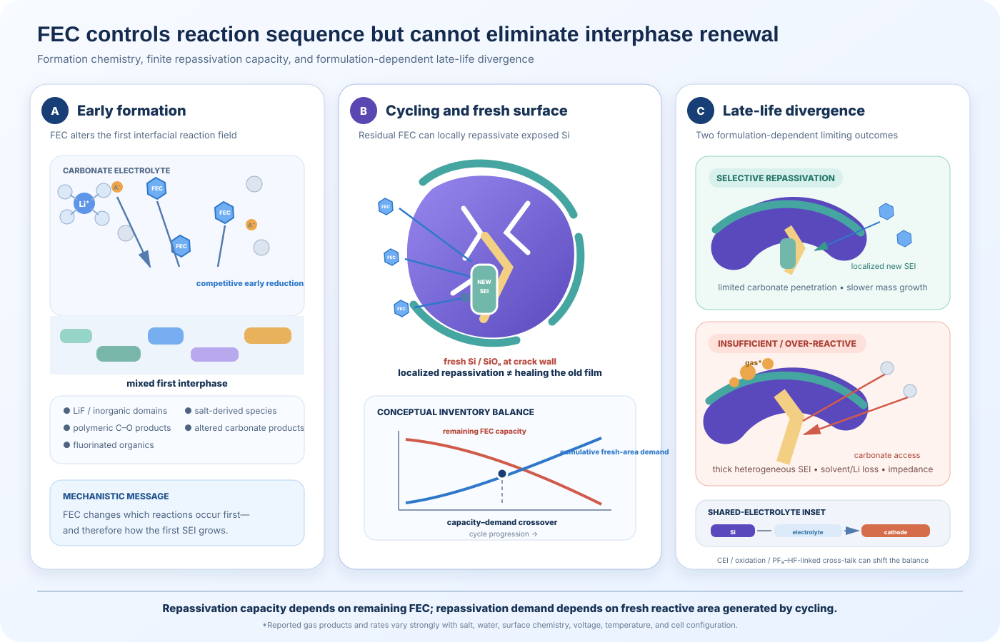
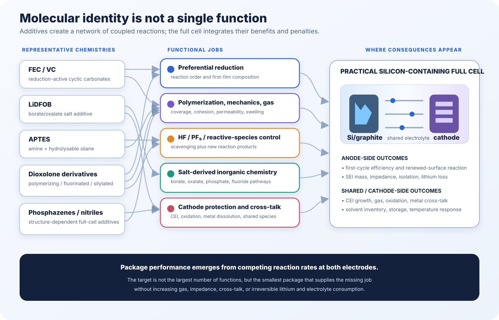
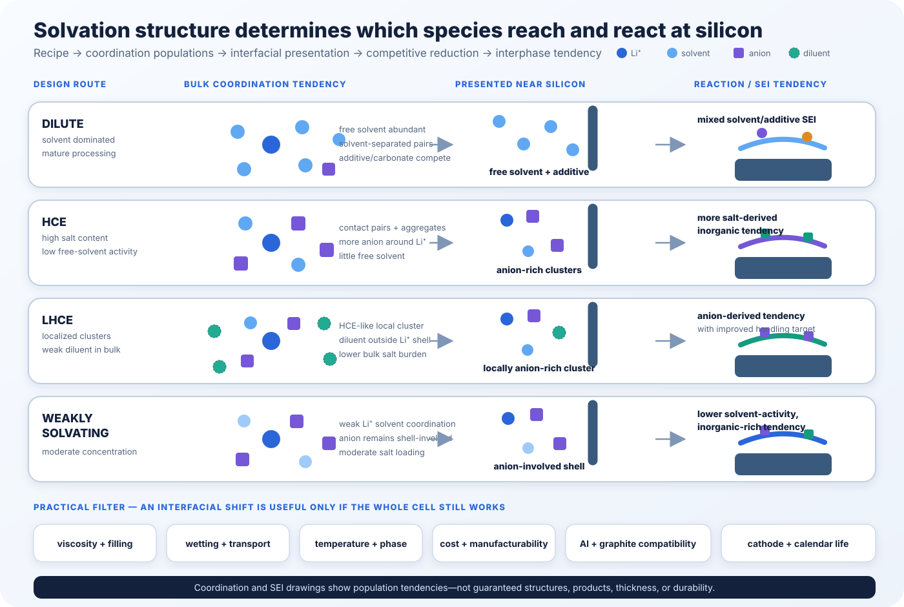
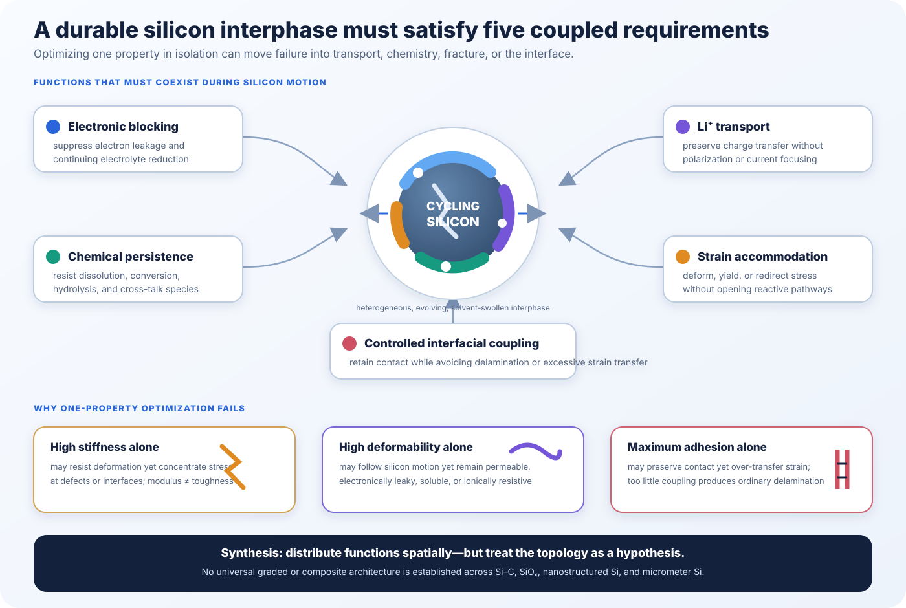
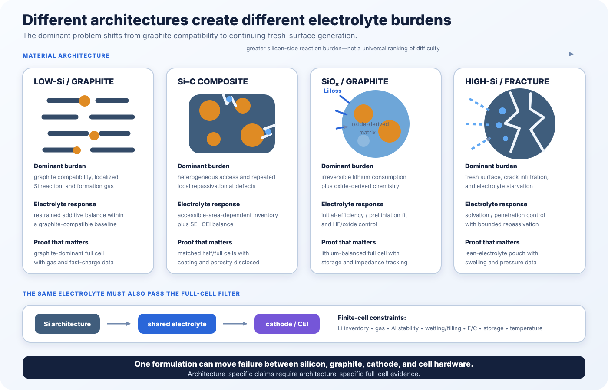
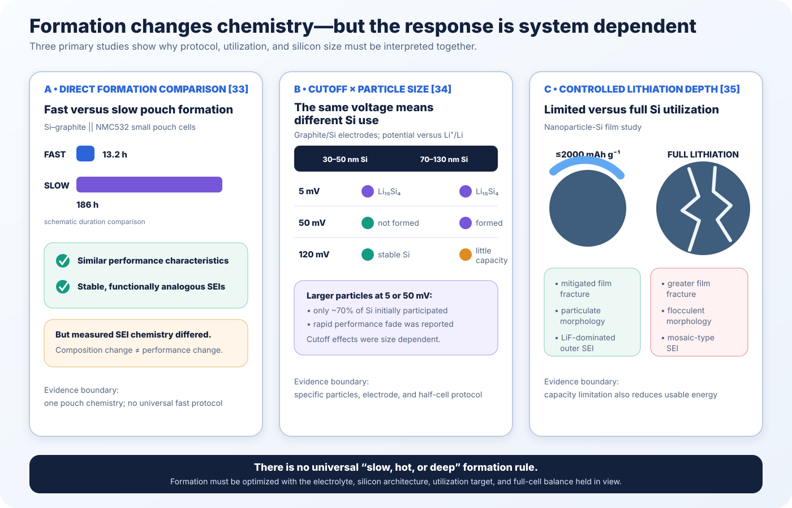
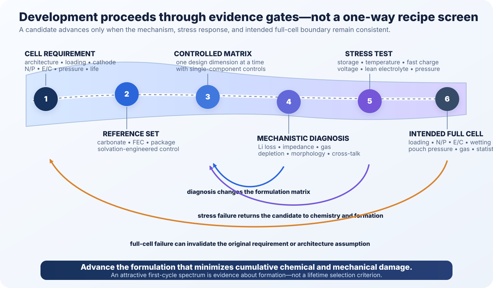

Silicon changes the job of the electrolyte. On graphite, electrolyte reduction is concentrated largely during formation; once a sufficiently passivating solid-electrolyte interphase (SEI) has formed, continued solvent decomposition can fall to a comparatively low rate. Silicon presents a different boundary condition. Lithiation restructures and expands the active material, while delithiation reverses the strain. Depending on particle size and electrode architecture, the resulting stress can deform surfaces, open cracks, disrupt contacts, and expose regions not protected by the previous interphase.[1][2]
Electrolyte reduction therefore becomes a recurring process rather than predominantly a formation-stage event. Each round of interphase reconstruction can consume cyclable lithium and electrolyte, generate gas, obstruct pores, increase impedance, and leave electrically isolated silicon or trapped lithium behind. The severity depends on silicon morphology, surface area, oxide content, graphite fraction, electrode loading, electrolyte inventory, and mechanical constraint; success against one silicon architecture does not guarantee transfer to another.
Fluoroethylene carbonate (FEC) became one of the earliest consequential answers because its interfacial reduction changed the chemistry and morphology of the silicon SEI and substantially improved cycling in influential nanowire and model-electrode studies.[3][4] Its success established a durable principle: electrolyte components must be chosen not only for bulk transport and voltage stability, but also for which reactions occur first at a surface that is continually being renewed.
That principle now extends beyond a single additive. Modern formulations alter additive competition, salt participation, free-solvent activity, solvation structure, interphase composition, gas chemistry, and cathode protection. In a practical Si/graphite full cell, all of those reactions draw from finite electrolyte and lithium inventories while sharing the same electrolyte with a high-voltage positive electrode.

What chemical and physical functions must the electrolyte perform throughout the life of a practical silicon-containing cell?
1. From One-Time Passivation to Repeated Interphase Renewal
Graphite and silicon do not ask the electrolyte to solve the same problem. In graphite, electrolyte reduction is concentrated mainly during formation. The resulting SEI must then block electron transfer, suppress solvent co-intercalation, and remain sufficiently conductive to Li ions. Silicon requires the same electrochemical selectivity, but at an interface that repeatedly changes during cycling.
Lithiation and delithiation produce much larger dimensional changes in silicon than in graphite. Depending on particle size and morphology, these changes can deform or fracture the active material, disrupt the existing SEI, and expose previously protected surface.[1][2] At electrode scale, pore geometry and conductive or binder contacts can also evolve. In Si/graphite blends, this evolution is spatially uneven because the two active materials do not lithiate, swell, or renew electrolyte-facing area in the same way.[5]

The consequence is cumulative rather than singular. Newly exposed silicon permits additional electrolyte reduction; new reaction products consume cyclable lithium and solvent; the interphase becomes thicker and more heterogeneous; ionic transport grows less uniform; and some silicon becomes progressively isolated from electronic or ionic pathways. In a practical full cell, that sequence appears as irreversible lithium loss, impedance growth, swelling or gas, and declining reversible capacity.
The design target is therefore a dynamically functional interphase, not a perfectly static shell. A useful silicon SEI must remain electronically passivating and Li-ion conductive while tolerating cyclic deformation without uncontrolled cracking, dissolution, delamination, or persistent mass accumulation. Silicon requires passivation that remains functional as the interface renews.
2. Why FEC Works—and Why Its Benefit Is Finite
FEC changes the first reaction sequence
FEC often reacts early at silicon-containing anodes and changes the composition and growth mode of the first interphase. Its reduction can contribute polymeric C–O-containing and fluorinated organic species together with inorganic products such as LiF. It can also alter carbonate and LiPF6 decomposition pathways.[3][4] Gas evolution, including CO2, belongs to a separate set of competing pathways and depends strongly on the complete formulation and cell conditions.
Reduction potential alone does not establish reaction order. Salt coordination, interfacial adsorption, silicon surface chemistry, water/HF content, binder environment, and formation temperature can change which pathways dominate. “Preferential FEC reduction” should therefore be read as a common formulation-dependent tendency—not as a fixed molecular sequence in every silicon electrolyte.
Direct measurements support the conclusion that FEC changes both SEI composition and its response during cycling. Using in situ neutron reflectometry on planar silicon, Veith and co-workers fitted an FEC-derived film that grew from roughly 5 to 7 nm during lithiation, thinned by about 1.3 nm during delithiation, and shifted between more organic-like and more inorganic-like states. The FEC-free comparison produced a much thicker fitted layer, roughly 18–25 nm, with a larger reversible thickness change.[6] Those dimensions belong to that planar electrode, electrolyte, and reflectometry model; they are not transferable thickness values for a porous Si/C or SiOx composite.
Residual FEC is a finite repassivation reservoir
FEC is not only relevant during formation. When cycling exposes new silicon, residual FEC can react at the unprotected site and establish a new passivating layer. This is localized repassivation, not literal healing of the fractured film. Every event consumes additive and lithium/electrolyte inventory while the cumulative area requiring passivation can continue to grow.
The physically useful quantity is therefore remaining FEC-derived repassivation capacity relative to newly generated reactive area—not a universal FEC percentage. In 9% Si/graphite electrodes, Gehrlein and co-workers compared 2 vol% FEC with 20 and 50 vol% FEC cosolvent formulations. Early behavior was similar, but late-life activity and SEI thickness diverged after the lower FEC inventory was consumed.[7]

The same reactivity can create late-life liabilities
At the anode, continued FEC and carbonate reduction can consume lithium and solvent, produce gas, and build resistive fluorinated or polymeric material. Differential electrochemical mass spectrometry identified H2 and CO2 as major gases in the tested FEC-containing Si half cells, while the FEC-free electrolyte additionally produced ethylene and CO.[8] These products are not universal fingerprints; salt, water, surface, voltage, temperature, and additive package change the gas chemistry.
Outside active anode cycling, the balance can shift again. Elevated temperature and storage can accelerate continuing reactions; LiPF6/PF5/HF chemistry can alter both interfaces; and FEC or its products may participate in cathode-side oxidation and CEI formation. Recent full-cell work therefore describes FEC as double-edged: cycling improvement and calendar-aging reactivity can coexist.[9]
FEC demand depends on where reactive area comes from
- Thin films and nanowires isolate silicon-surface chemistry but omit porous-electrode transport, binder/carbon contacts, and practical electrolyte inventory.[3][4]
- Nanosilicon and Si-C composites can present high initial accessible area, while carbon coatings and their defects determine how much silicon the electrolyte actually reaches.
- Si/graphite blends require simultaneous graphite compatibility and passivation of spatially heterogeneous silicon sites. In one study, 10 wt% FEC improved a 15% Si/graphite half cell but did not outperform a LiNO3/MEC package in the matched NCM111 full cell.[10]
- SiOx/graphite adds irreversible oxide and silicate chemistry to the interphase and lithium balance. A 2025 full-cell comparison found VC superior to LiDFOB when both were paired with FEC, while also revealing different cathode damage.[11]
- Micrometer silicon can generate substantial internal fracture area later in life, making solvation control and resistance to crack infiltration as important as initial additive concentration.
This material dependence also explains why additive selection should not be framed simply as FEC versus VC. Different molecules can perform complementary functions. NMR on binder-free Si nanowires identified cross-linked PEO-like and aliphatic polymer structures in both pure FEC- and pure VC-based electrolytes, with organosiloxane bonding at the interface.[12] Park and co-workers later combined VC with fluorinated and silylated dioxolone derivatives to build a multifunctional network; the reported NCM811/Si-C full cells retained 81.5% capacity after 400 cycles.[13]
3. How Salts and Solvents Set the Interfacial Reaction Field
Salt choice sets chemical partners, not just conductivity
LiPF6 remains the practical carbonate baseline because it combines useful conductivity, aluminum passivation, and familiar processing. It is not chemically neutral: moisture and heat generate PF5, HF, and fluorophosphate species that can react with native SiOx, additives, and both electrodes. LiFSI and LiTFSI can instead increase anion participation and produce different interphase products, especially when concentration or solvent donor strength favors ion pairing. Direct nanosilicon spectroscopy resolved a LiFSI-derived SEI distinct from its LiPF6 comparison, while concentrated LiFSI/EC studies extended the analysis to Si/graphite and high-voltage electrodes.[14][15]
These advantages are conditional. Imide salts can create aluminum-corrosion or high-voltage-passivation problems outside suitable concentration and additive windows, while LiPF6-derived acid chemistry depends strongly on water, temperature, and storage. The salt therefore supplies reaction partners; solvent identity, salt-to-solvent ratio, coordination populations, and electrode potential determine which partners reach and react at the interface.[15]
Alternative salts and co-salts are functional modifiers
Borate-, oxalate-, and phosphate-containing species can distribute transport, acid control, anode passivation, and cathode protection across several components, but they are not one mechanistic family. One thin-film study found that 1 wt% LiDFOB altered the silicon SEI and suppressed LiPF6 decomposition without simply increasing surface LiF; elevated-temperature full-cell work showed that LiDFOB can also affect the CEI.[16][17] LiBOB and LiPO2F2 bring different solubility, gas, impedance, and voltage-window constraints. Mixed-salt designs are therefore useful when each component has a defined function and matched controls reveal the resulting competition.
| Salt family | Main opportunity | Main risk | Most defensible use |
|---|---|---|---|
| LiPF6 | Commercial benchmark; useful conductivity and Al passivation | PF5/HF chemistry, moisture and heat sensitivity, interaction with SiOx and additives | Baseline and commercial-like carbonate formulations |
| LiFSI / LiTFSI | Greater anion participation and alternative salt-derived interphase pathways | Al corrosion, high-voltage CEI requirements, and strong dependence on solvation structure | Intentionally concentrated, localized, or weakly solvating designs |
| LiDFOB / LiBOB | Sacrificial borate/oxalate chemistry and possible dual-interface effects | Solubility, gas, impedance, and formulation-specific outcomes | Additive or co-salt tuning with matched single-component controls |
| LiPO2F2-type | Phosphate/fluoride interphase support and possible acidic-species control | Dose and voltage sensitivity; thinner direct silicon evidence | Secondary optimization after the base electrolyte is established |
Solvent choice changes transport and interphase chemistry
The solvent is part of the reaction, not an inert carrier. EC supports salt dissociation and familiar carbonate passivation, while EMC, DMC, and DEC reduce viscosity and aid wetting. Reducing or removing EC can benefit selected high-silicon or high-voltage systems, but graphite co-intercalation and blend compatibility prevent “EC-free” from becoming a general rule. Fluorinated carbonates can lower solvent activity and redirect reduction while adding cost and possible gas or persistence concerns; ethers and glymes provide low viscosity and different coordination but face graphite and high-voltage constraints; sulfones and phosphates can improve oxidation or flammability behavior at the cost of viscosity or diluent dependence.[18][19] Solvent-family claims therefore require the salt, blend ratio, electrode pair, and operating window.
Selective dissolution is intriguing—but not yet general
Tian and co-workers reported a less conventional role for a GBL-containing electrolyte: preferential removal of selected soluble or low-resilience SEI components from micrometer silicon, leaving an interphase enriched in LiF and polycarbonates. The study reported 87.5% half-cell retention after 100 cycles and 83.7% retention for Si||NCM811 after 150 cycles.[20] This suggests that a solvent can act as an interphase filter, but it does not establish donor number or dissolution as a universal design rule. Removal must remain selective enough to avoid exposing silicon, dissolving necessary passivation, or worsening calendar aging.
Design conclusion: salt and solvent names are incomplete descriptors. Their value emerges from the coordination state, interfacial reaction sequence, transport properties, and full-cell constraints they create together.
4. From Additive Lists to Functional Packages
Additives rarely perform only one job. Labels such as “film former,” “HF scavenger,” or “cathode additive” name a familiar reaction, not the complete network a molecule can initiate in a silicon full cell. FEC changes early reduction, polymeric products, salt decomposition, and gas chemistry; LiDFOB can contribute to both SEI and CEI; a PF5/HF scavenger can produce surface-reactive products of its own. The useful question is therefore which function is missing from the base electrolyte—and what penalty appears when it is supplied.

Five jobs provide a more useful map
| Functional job | Representative chemistries | What the formulation is trying to control | Characteristic failure mode |
|---|---|---|---|
| Preferential reduction and early film formation | FEC, VC, dioxolone derivatives | Establish passivation before extensive carbonate reduction; control initial organic/inorganic products | Additive depletion, gas, excessive polymerization, or a resistive film |
| Salt-derived inorganic interphase control | LiDFOB, LiBOB, LiPO2F2 | Shift SEI/CEI reactions toward borate-, oxalate-, phosphate-, or fluoride-containing products | Impedance, limited solubility, corrosion, or competing salt reactions |
| Acid and reactive-species control | APTES and selected silylated, borate, or phosphate chemistries | Intercept PF5, HF, water-linked pathways, or reactive surface species | Moisture dependence and new products that are themselves reactive or resistive |
| SEI–CEI coupling and cathode protection | Phosphazenes, nitrile-type additives, multifunctional packages | Limit cathode oxidation, transition-metal dissolution, and cross-talk while retaining anode compatibility | Protection at one electrode accompanied by reduction, gas, or impedance at the other |
| Polymerization, gas, and mechanical/interphase tuning | VC, DES, DTD, PES, multifunctional cyclic additives[21] | Control film cohesion, interphase permeability, gas pathways, and renewed-surface coverage | Dense or brittle growth, pore blockage, swelling, and strong package dependence |
The categories overlap by design. VC participates in early reduction and polymerization; LiDFOB affects inorganic products and both electrode interfaces; APTES combines scavenging, condensation, and oxide-surface chemistry. This overlap becomes experimentally important in packages.
Package behavior is nonlinear
FEC and VC can compete for reduction, alter one another's polymerization and salt-decomposition pathways, and respond differently to formation. Silicon spectroscopy demonstrates distinct product distributions, while Si/graphite and SiOx/graphite studies show that additive rankings change with electrode and full-cell conditions.[12][10][11] LiDFOB makes the same point across interfaces: it modified thin-film silicon and supported elevated-temperature full cells, yet was not interchangeable with VC in a later SiOx/graphite comparison.[16][17][11]
APTES further shows that scavenging is itself interphase chemistry: the reported effects involved PF5/HF control, moisture-sensitive condensation, oxide-surface interaction, and changed thermal behavior.[22] Fluorinated and silylated dioxolones and phosphazene derivatives make multifunctionality explicit, producing structure-dependent differences in polymerization, interphase composition, storage, gas, and pouch-cell behavior.[13][23] Closely related molecules therefore cannot be assumed to supply the same reaction network.
A package can also change coordination, consume another component, redirect gas, and build SEI and CEI simultaneously. Concentration changes role: a trace precursor can become a cosolvent that alters bulk transport and solvation. Binary performance is therefore not the arithmetic sum of two single-additive results.
Mechanistic attribution still requires a base-electrolyte control, every component alone, binary combinations, and the complete package under matched formation and full-cell conditions. That minimum matrix distinguishes competition from synergy; Section 11 develops the broader screening workflow.
Design conclusion: formulation begins with a missing interfacial function, not a favored molecule. The smallest package that supplies that function at the required time—without destabilizing the other electrode or exhausting finite lithium and electrolyte inventories—is the more defensible design.
5. Beyond Additives: Engineer the Solvation Structure
Electrolyte composition does not directly determine interphase chemistry; solvation structure mediates that relationship. High concentration, localized concentration, and weakly solvating formulations are different routes for changing which solvents, additives, and anions are presented to reactive silicon.
Solvation determines the interfacial reaction field
Molarity alone cannot distinguish free solvent, solvent-separated pairs, contact pairs, and larger aggregates. Those populations influence solvent activity, desolvation, anion access, conductivity, viscosity, and the supply of reducible species. They still do not fully specify the interface: adsorption, electric-field-driven reorganization, surface chemistry, kinetics, and additive enrichment can make the near-surface population differ from the bulk.
The causal chain is therefore conditional rather than automatic:
Each arrow must be tested. An anion-rich bulk spectrum does not by itself prove an anion-derived silicon SEI, and an inorganic-rich SEI does not by itself prove low impedance or mechanical durability.

Different strategies shift the interfacial population by different routes
Dilute carbonate electrolytes usually retain more free solvent and solvent-dominated coordination, supporting mature processing and wetting but repeatedly supplying solvent and additive to renewed silicon. HCEs reduce free-solvent activity by increasing contact pairs and aggregates, which can raise anion participation; concentrated LiFSI/EC also demonstrates the accompanying viscosity, wetting, cold-transport, cost, and current-collector constraints.[15]
LHCEs disperse salt-rich local clusters in a weakly coordinating diluent to ease some bulk penalties without intentionally displacing the concentrated coordination environment. Silicon full-cell and calendar-life studies show promise, while leaving phase behavior, filling, cost, and temperature dependence to be solved.[24][25] Weakly solvating electrolytes instead change the coordinating solvent environment itself, limiting solvent domination at moderate concentration; micrometer-silicon studies illustrate the potential but not automatic transfer to graphite or high-voltage cathodes.[26][27]
Interfacial concepts require different evidence from solvation strategies
Selective dissolution concerns which products persist after cycling; it is not a solvation architecture equivalent to HCE or LHCE. Likewise, “silicon-phobic” describes a proposed interfacial consequence, not a bulk coordination state. The high-voltage LiPF6/FEC/sulfolane/TTE system illustrates the distinction: its authors associated performance with a low-affinity LiF/Li2O-rich interphase and demonstrated high-loading silicon and NCA||Si pouch operation, but the formulation simultaneously changed coordination, solvent activity, reaction chemistry, and the cathode environment.[28]
Practical cells decide whether the interfacial shift is useful
Anion-rich coordination is not an end point. The electrolyte must still provide conductivity, wetting and filling, low-temperature power, thermal stability, manufacturable cost, and compatibility with aluminum, graphite, binders, separators, and the cathode voltage window. Evidence should connect measured or simulated coordination populations to interfacial products, gas and impedance, and finally lean-electrolyte full-cell and calendar behavior. The target is not maximum anion coordination, but the interfacial population that minimizes irreversible reaction while preserving whole-cell transport and compatibility.
6. From Reaction Control to Interphase Performance
Reaction control matters only if the resulting interphase continues to function during silicon motion. It must block electrons, transport Li+, resist chemical loss, accommodate deformation, and control stress transfer at the Si–SEI boundary. No single descriptor—LiF-rich, inorganic, soft, strong, adhesive, thin, or self-healing—guarantees all five.

Five requirements must remain coupled
Electronic blocking must suppress continuing electrolyte reduction, while Li+ transport must avoid polarization through the solvent-swollen, cycled film. Chemical persistence requires resistance to dissolution, further reduction, and cross-talk products during cycling and storage. Strain accommodation governs yielding and fracture as silicon changes dimensions, and controlled interfacial coupling decides whether strain is transferred, relieved by slip, or converted into delamination and liquid penetration.[1][2] Improving one requirement while degrading another can accelerate renewal.
Single-property optimization creates predictable blind spots
High stiffness is not fracture resistance. Modulus is distinct from strength, toughness, strain-to-failure, and interfacial fracture energy. LiF-rich or other inorganic domains may add persistence and stiffness, but their effect depends on continuity, defects, porosity, constraint, adhesion, and the surrounding phases; “inorganic-rich” is not a synonym for “brittle.”
High deformability is not passivation, and maximum adhesion is not necessarily optimal. A compliant polymer-rich film can remain permeable, soluble, electronically leaky, or ionically resistive. Strong bonding can transfer more silicon strain into the SEI, whereas insufficient coupling permits delamination and electrolyte access. The relevant response is that of the heterogeneous, solvent-swollen interphase at its actual thickness, geometry, state of charge, and constraint.
Composition must be connected to topology and state
Post-mortem composition alone cannot reveal whether inorganic phases form a continuous layer, dispersed domains, crystallites, or porous residue, or whether polymeric products bridge cracks while still admitting solvent. Spatially distributed functions may be more realistic than a uniformly “hard” or “soft” film, but no universal graded topology has been established across Si–C, SiOx/graphite, nano-Si, and micrometer silicon.
Controlled decoupling and recovery remain hypotheses
A low-affinity boundary may reduce strain transfer in particular architectures only if it preserves electronic contact, Li+ access, and exclusion of liquid electrolyte; otherwise it is ordinary delamination.[5] Likewise, FEC reaction at newly exposed silicon is localized repassivation, not proof that the original film heals. Useful recovery must be localized, finite, and self-terminating. Regrowth that continuously consumes lithium and electrolyte is renewed parasitic reaction.
Thickness is not durability
This is a proposed comparison framework, not a standardized metric. It requires cycle-resolved measurements connecting silicon expansion with parasitic charge, gas, impedance, and interphase mass or thickness under controlled loading and electrolyte inventory. Its value is to judge function retained per cycle of motion rather than a static label or one post-mortem image.
7. Electrolyte Requirements Depend on Silicon Architecture and Cell Context
“Silicon anode” is not one electrolyte target. A formulation optimized for one architecture cannot be assumed to transfer to another because the dominant source of irreversible reaction changes with silicon fraction, carbon coverage, oxide content, exposed area, particle fracture, and electrode design. Material form determines where electrolyte can reach, how much lithium is consumed before reversible cycling, and whether the main burden is graphite compatibility, local repassivation, oxide conversion, or continuing fresh-surface generation.
Different architectures create different electrolyte burdens

Low-Si/graphite blends are graphite constrained. Most active area and capacity still belong to graphite, while silicon creates localized high-strain reaction sites. The electrolyte must prevent solvent co-intercalation, retain acceptable graphite kinetics, and control formation gas; extreme silicon-side intervention may impose more viscosity, impedance, or cost than the modest silicon fraction justifies. Component-level lithium redistribution and mechanical compression still matter even when the average silicon content is low.[5]
Si–C composites are access and heterogeneity constrained. Carbon coatings or matrices can reduce direct liquid contact, but defects, pore networks, coating rupture, and differential motion determine where electrolyte reaches silicon. Additive demand therefore depends on accessible and newly exposed area rather than nominal silicon wt%. The practical task is to supply local repassivation without sacrificing graphite, cathode, or transport performance.
SiOx/graphite is strongly lithium-inventory constrained. SiOx is not elemental silicon with less expansion. Initial lithiation forms Li2O and lithium silicates alongside lithiated silicon domains, lowering initial Coulombic efficiency while creating an oxide-derived matrix that changes subsequent mechanics and interphase chemistry.[29] Oxygen content, prelithiation, HF exposure, and borate/phosphate reactions therefore carry different weight than in elemental silicon.
High-Si and fracture-dominated electrodes are surface-renewal constrained. This class includes high-silicon composites and architectures—often including micrometer silicon—in which particle cracking or network-wide expansion exposes substantial external and internal surface. Repassivation demand, liquid penetration into cracks, pore blockage, and electrolyte starvation become central. Lower free-solvent activity or altered solvation may be valuable, but only if the resulting formulation can wet and fill the thick electrode under lean inventory.
| Silicon architecture | Dominant electrolyte burden | What usually matters most | Validation that resolves the risk |
|---|---|---|---|
| Low-Si/graphite blend | Graphite compatibility, localized Si reaction, formation gas | Conventional-carbonate compatibility and restrained additive balance | High-loading, graphite-dominant full cell with gas and fast-charge measurements |
| Si–C composite | Heterogeneous access and repeated local repassivation | Accessible-area-dependent additive inventory, coating integrity, SEI–CEI balance | Matched half/full cells with disclosed coating, porosity, and silicon capacity contribution |
| SiOx/graphite | Irreversible lithium loss plus oxide-derived interphase chemistry | Initial efficiency, prelithiation, HF/oxide chemistry, and cathode compatibility | Prelithiated or lithium-balanced full cell with storage and impedance tracking |
| High-Si/fracture-dominated | Fresh-surface generation, crack infiltration, electrolyte starvation | Solvation and penetration control, bounded repassivation, low gas | High-areal-capacity, lean-electrolyte pouch with swelling and pressure data |
Full-cell constraints can reverse half-cell rankings
An electrolyte cannot be optimized for the silicon anode in isolation. The same formulation must tolerate the cathode cutoff voltage, build an acceptable CEI, limit transition-metal dissolution and oxidative cross-talk, protect aluminum when imide salts are used, wet the separator and thick porous coatings, and control gas under finite lithium and electrolyte inventories.
The consequences are experimentally visible. In one Si/graphite study, the FEC-containing formulation retained 88.4% capacity after 100 cycles in the half cell but only 44.6% in the matched NCM111 full cell, showing that an attractive silicon-side ranking did not transfer directly.[10] In a later SiOx/graphite full-cell comparison, the additive associated with better anode behavior also coincided with greater cathode strain and cracking.[11] These results do not establish universal rankings; they demonstrate that the shared electrolyte can move failure between electrodes.
Validation must match the intended architecture
The decisive experiment follows the dominant burden. Low-Si blends require graphite-dominant, high-loading full cells and realistic fast-charge behavior. Si–C composites require disclosure of coating, pore access, silicon utilization, and matched half/full-cell controls. SiOx requires an explicit lithium balance and prelithiation protocol. Fracture-dominated electrodes require lean E/C, high areal capacity, pressure or swelling, gas, and cross-sectional evidence of crack infiltration and pore filling.
Across all classes, comparisons should hold silicon form, capacity contribution, loading, density, porosity, N/P ratio, cathode, upper cutoff, electrolyte amount, formation, pressure, and temperature as constant as the hypothesis allows. Storage and calendar aging are necessary because additive depletion, dissolution, gas, corrosion, and cross-talk continue even when cycle count is not increasing.
Design conclusion: choose the electrolyte only after defining the intended silicon architecture and full-cell boundary. The next section turns that boundary into a formation and validation sequence, progressing from mechanistic isolation to lean-electrolyte pouch and application-level evidence.
8. Formation Is Part of the Formulation
The same electrolyte composition can produce different interphases when the first-cycle history changes. Formation sets the initial competition among solvent, additive, and salt reduction while silicon is undergoing its largest one-time structural transition from the as-made state. It determines how much irreversible lithium and additive inventory is spent, how deeply silicon is first lithiated, how much gas is generated, and which surface is presented to later cycles. Formation is therefore a chemical boundary condition, not merely a factory step performed before the “real” test.
Formation selects pathways—but a slower protocol is not automatically better
Rago and co-workers tested small Si–graphite||NMC532 pouch cells using formation protocols lasting either 13.2 or 186 hours. The fast protocol produced performance characteristics similar to the slow protocol; both produced stable, functionally analogous SEIs, even though their measured chemistry differed.[30] This controlled comparison supports two important conclusions. Formation can change interphase composition, but a compositional difference need not produce a performance difference; and long, slow formation should not be treated as a universal requirement.

Silicon makes first-lithiation depth consequential
Formation voltage and capacity are not merely reporting details because they set silicon utilization and expansion. Schott and co-workers showed that cutoff effects depended on particle size in graphite/Si electrodes: 30–50 nm silicon formed crystalline Li15Si4 at 5 mV but not at 50 mV, whereas 70–130 nm silicon formed it already at 50 mV and faded rapidly; at 120 mV, the larger particles contributed little capacity while the smaller particles still delivered a stable, significant contribution.[31] A cutoff cannot therefore be labeled “safe” or “deep” without specifying the material.
A later nanoparticle-Si study controlled lithiation by capacity rather than voltage. At 2000 mAh g−1 or below, the authors reported no capacity decay during their test period, reduced electrode-film fracture, retained particulate morphology, and a LiF-dominated outer SEI rather than the mosaic-type interphase observed under full lithiation.[32] The result links utilization, mechanics, and interphase formation in that system. It does not imply that capacity limitation is free: reducing lithiation depth also reduces accessible energy, and the optimum will depend on particle size, architecture, loading, and full-cell balance.
Process variables need controlled matrices, not universal directions
Temperature, current, voltage trajectory, constant-voltage holds, rest, wetting time, pressure, and degassing can all plausibly change reaction rate, transport, contact, or gas history. Their direction of benefit is formulation and cell dependent. Higher temperature may improve wetting while accelerating parasitic chemistry; slower current may separate reduction events while spending more time at reactive potentials; pressure may maintain contact while changing pore access and stress. Without a formation-controlled matrix, these remain process rationales rather than demonstrated causes.
A useful experiment changes one formation variable while holding electrolyte batch, water content, electrodes, loading, N/P, electrolyte amount, assembly rest, pressure, and subsequent cycling constant. It then measures more than capacity: formation charge, first-cycle efficiency, dQ/dV, gas, impedance, additive depletion, and interphase chemistry. This is the minimum needed to say that a protocol changed what the electrolyte became.
Formation history belongs in the electrolyte specification
For silicon-electrolyte studies, formulation cannot be interpreted independently of formation. At minimum, report wetting time and temperature; current and voltage sequence; electrode or full-cell cutoffs; CV criteria; rest periods; pressure or fixture; formation-cycle count; and degassing procedure where applicable. Also state whether formation limits silicon by voltage, capacity, time, or cathode state of charge.
9. Evidence Must Scale with the Claim
This section is about what an experiment can legitimately prove. Mechanistic isolation is strongest on model surfaces; finite lithium, shared-electrolyte cross-talk, gas, pressure, and filling constraints emerge only as the test approaches a practical pouch. No level is sufficient alone, and a more practical format does not automatically provide a more specific mechanism.
| Test level | What it isolates well | What it still misses | Appropriate claim |
|---|---|---|---|
| Model Si surface or thin film | Reaction sequence, thickness change, spectroscopy, and surface mechanics | Porous-electrode transport, composite motion, finite lithium, and cathode cross-talk | Interfacial mechanism under stated conditions |
| Composite Si half-cell | Relative anode screening and electrode-level impedance or morphology | Finite lithium inventory, cathode oxidation, shared-electrolyte cross-talk, and realistic pressure | Comparative anode behavior—not practical full-cell life |
| Balanced full cell | Coupled SEI/CEI chemistry, lithium balance, and cathode compatibility | Often still uses excess electrolyte, modest loading, or unrealistic hardware | Chemistry transfer to the specified electrode pair |
| High-loading, lean-electrolyte pouch | Transport, filling, gas, swelling, pressure, and finite inventory | Mechanistic isolation; multi-Ah manufacturing and application duty cycle may remain | Practical durability within the disclosed platform |
A claim is inseparable from its boundary
Interpretation requires the silicon form and fraction, architecture, loading and porosity; electrolyte composition and ratio basis; cathode, N/P, E/C, prelithiation, voltage window, formation, pressure, temperature, and replicate count. Cycle retention and Coulombic efficiency gain meaning only when read with impedance, gas and swelling, lithium or additive depletion, morphology, and interphase chemistry. A multi-Ah result adds practical weight only to the extent that these conditions and statistics are disclosed.
Ex situ comparisons require matched state of charge, cycle number, rest history, rinsing and transfer procedure, and sample location. Otherwise an apparent XPS, TOF-SIMS, NMR, TEM, or mechanical difference may reflect sampling rather than mechanism. The strength of the claim should stop where the controlled evidence stops.
10. What Was Actually Tested: Representative Silicon Electrolyte Formulations
The table below is not a performance ranking. It records the actual electrolyte recipe, silicon architecture, and cell boundary used in representative studies so that formulation claims are not detached from their experimental context. Ratios and concentration bases are reproduced as reported; outcomes should be compared only within each study.
| Si material / cell | Exact electrolyte tested | Silicon / cell context | Representative reported outcome | What the study actually established | Important limitation |
|---|---|---|---|---|---|
| Planar amorphous Si / Li[6] | 1.0 M LiPF6 in deuterated EC:DMC = 30:70 wt/wt + 5 wt% FEC; matched FEC-free electrolyte | Nonporous reflectometry electrode; water content not determined | Fitted FEC-derived SEI thickness changed reversibly by ~5–7 nm with state of charge | In situ neutron reflectometry resolved a composition and thickness response hidden by a single post-mortem measurement | A planar model cannot supply the surface renewal, porosity, or electrolyte demand of Si/C |
| 9 wt% Si/graphite / Li[7] | 2 vol% FEC in commercial LP30 (1 M LiPF6, EC:DMC = 1:1) versus 1 M LiPF6 in FEC:DMC = 20:80 or 50:50 vol/vol | Half cells; 150 µL excess electrolyte; additive-to-cosolvent series | At 100 cycles, reported retention was 51% with 2% FEC and 78–79% with 20–50% FEC | Low FEC inventory was associated with earlier depletion, renewed surface activity, and a thicker evolved SEI | FEC inventory and EC content changed together; no cathode or lean-electrolyte constraint |
| 15 wt% Si/graphite / Li and NCM111[10] | 1.2 M LiPF6 in EC:DEC = 1:1 wt/wt + 10 wt% FEC; LiNO3/methyl ethylene carbonate comparators | Coin half and full cells; duplicate cells; 100-cycle comparison | With FEC, retention was 88.4% in the half cell but 44.6% in the matched full cell | The same additive can give divergent results once lithium inventory and cathode-side reactions enter the system | Excess electrolyte, modest loading, and limited replication constrain practical transfer |
| Si–C / NCM811 full cell[13] | 1.15 M LiPF6 in EC:EMC = 3:7 vol/vol + 0.5 wt% VC + 0.5 wt% DMVC-OCF3 + 0.5 wt% DMVC-OTMS | ~3 wt% Si in Si–C; anode/cathode areal capacities ~3.2/2.7 mAh cm−2 | 81.5% capacity retention after 400 cycles at 1 C; fast-charge operation was also reported | The coupled package altered polymer formation, LiF chemistry, HF reactivity, and both electrode interphases | Three specialty additives were changed as one package, and the silicon fraction was low |
| 12.5 wt% Si/graphite / NMC111[15] | LiFSI:EC = 1:2 mol/mol in the full cell; LiFSI:EC = 1:6 to 1:2 series studied; LP40 control was 1 M LiPF6 in EC:DEC = 1:1 vol/vol | Cathode-limited full cell; ~2 mAh cm−2; 120 µL electrolyte | The 1:2 electrolyte outperformed LP40 under the reported NMC111 full-cell tests; 1:4 was optimal in Li-metal half cells | The useful concentration depended on cell architecture because passivation gains competed with conductivity and wetting losses | High viscosity and wetting penalties remained; performance deteriorated with a ~4.7 V LNMO cathode |
| Commercial BTR1000 Si/graphite / NMC333[24] | NFE-2: LiFSI:TEPa:FEC:BTFE = 1:1.2:0.13:4 molar; reported as ~1.2 M LiFSI with 1.2 wt% FEC | Prelithiated commercial composite; nonflammable localized high-concentration electrolyte | >90% capacity retention after 600 cycles at C/2 in the reported full cell | Phosphate solvation, fluorinated diluent, and a small FEC inventory produced a nonflammable electrolyte compatible with both electrodes | Prelithiation and specialty solvent/diluent complicate cost, processing, and direct comparison with carbonate controls |
| ~7 µm Si / Li and NCM811[20] | 1 M LiPF6 in GBL:DEC:FEC = 45:45:10 vol/vol/vol | Micrometer-Si half cells and NCM811 full cells; 0.2 C cycling | 87.5% half-cell retention at 100 cycles and 83.7% full-cell retention at 150 cycles | GBL selectively removed less resilient SEI species while a LiF/polycarbonate-rich remainder persisted | The dissolution window was demonstrated in one micrometer-Si system; generality and calendar aging remain unresolved |
| 5 µm Si / Li and NCA[28] | 1.0 M LiPF6 in FEC:sulfolane:TTE = 2:6:2 vol/vol/vol | 4.1 mAh cm−2 Si electrode; coin full cells and 100 mAh pouch cells | 2718 mAh g−1 initial Si capacity; 81% retention after 200 coin-cell cycles; pouch operation to 120 cycles | A Li2O/LiF-rich, relatively low-affinity interphase coincided with reversible micrometer-Si expansion and 4.3 V compatibility | Solvent coordination, interphase composition, adhesion, and cell mechanics changed together |
| Si/C@C / Li and Si/C@C–graphite / NMC811[33] | 1 M LiDFOB in VC:[EC:DEC = 1:1 vol/vol] = 2:3 vol/vol + 0.2 wt% AIBN relative to VC; polymerized 60 °C/24 h then 80 °C/2 h | ~2.8 mg cm−2 half-cell electrode; gel formed after cell filling; full-cell composite also tested | 95.5% retention after 100 half-cell cycles; high-rate Si/C@C–graphite/NMC811 operation was demonstrated | In-cell VC polymerization linked electrolyte retention and mechanical constraint with altered transport and interfaces | The Si/C@C architecture, graphite blend, separator, thermal cure, and gel chemistry were co-optimized |
| High-loading Si / NMC811 pouch[34] | 2 M LiPF6 in FEC:FDEC = 3:7 vol/vol + 1 wt% BTHE | ~8.1 mAh cm−2 Si testing; 2.68 Ah pouch cell | 84.3% capacity retention after 1000 pouch cycles was reported | Anion enrichment plus fluorinated-solvent reduction produced a LiF-rich inner region and fluorinated-organic outer region | The formulation couples high salt, two fluorinated solvents, and a specialty borate; independent practical reproduction remains important |
The literature above establishes what has been demonstrated. The final sections translate those findings into a development framework and identify where the evidence remains too system-specific for a general design rule.
11. A Rational Development Workflow
A useful workflow is organized around decisions, not a sequence of routine tests. Each gate asks whether the current evidence still supports the proposed mechanism and whether the formulation remains compatible with the intended cell boundary. A candidate that fails later validation should return to the relevant earlier assumption rather than advance because it performed well in a flooded half cell.
Start from the intended cell, not the additive
Define the silicon architecture, silicon capacity contribution, areal loading, cathode and upper voltage, N/P ratio, electrolyte inventory, formation protocol, pressure, temperature range, cycle-life target, and safety constraints before formulation screening begins. These choices determine whether the dominant risk is first-cycle lithium loss, repeated surface renewal, graphite interference, cathode oxidation, wetting, gas, or transport under lean electrolyte.
Use references that separate mechanisms
An interpretable reference set should include a conventional LiPF6/carbonate baseline, an FEC-containing formulation, a multifunctional additive package, and at least one solvation-engineered electrolyte. The purpose is not to nominate a winner immediately. It is to determine whether changing reaction sequence, additive inventory, anion participation, or full-cell compatibility moves the dominant failure mode.
Change one design dimension at a time
Salt identity, solvent environment, additive package, concentration architecture, and formation should be varied with single-component and matched-composition controls. Without those controls, improved retention cannot be assigned confidently to solvation, additive reduction, interphase chemistry, transport, or processing. Multicomponent packages may ultimately be necessary, but their selection should follow—not replace—mechanistic separation.
Select on cumulative damage, then stress the chemistry
Capacity and Coulombic efficiency should be interpreted with irreversible lithium loss, impedance, gas and swelling, additive or solvent depletion, cross-sectional morphology, and cathode–anode cross-talk. Storage, high and low temperature, fast charge, high cathode voltage, lean electrolyte, and realistic pressure then reveal liabilities that excess-lithium half cells often suppress.
Revalidate at the intended boundary
Raise loading, remove excess lithium and electrolyte, match N/P and E/C, reproduce the intended formation and pressure history, and measure pouch gas, swelling, impedance, and cell-to-cell variation. A formulation has not transferred merely because the same nominal solvent and additive names were used; electrode porosity, wetting, silicon utilization, cathode voltage, and additive inventory per unit accessible area must also remain relevant.

The objective is not to select the electrolyte that produces the most attractive initial SEI spectrum, but the one that minimizes cumulative chemical and mechanical damage over the intended cell life.
12. Outlook: What Still Needs to Be Solved
The literature supports several productive design directions, but it does not yet support a universal silicon electrolyte. The maturity of the evidence differs substantially among incremental formulation improvements, emerging interphase concepts, and proposed descriptors that have not been validated across silicon architectures.[29][18][19][35]
Near-term, evidence-supported directions
Solvation engineering, mixed-salt or multifunctional additive packages, dual-interface SEI/CEI design, formation optimization, and validation under lean-electrolyte full-cell conditions all build on mechanisms demonstrated in multiple systems. The practical task is to determine which combination is compatible with a specified Si-C, SiOx/graphite, or high-silicon architecture—not to maximize anion participation, fluorination, or additive concentration in isolation.
Emerging but still system-specific concepts
Controlled interphase dissolution and reorganization, electrolyte–binder co-design, low-affinity or strain-decoupled boundaries, and gradient composite interphases are plausible routes to reducing irreversible mass growth. Their transferability remains uncertain because chemistry, morphology, adhesion, porosity, and cell mechanics are commonly changed together. These concepts should be treated as testable mechanistic hypotheses rather than established interphase blueprints.
Key unresolved questions
- Which solvent-swollen mechanical properties—modulus, toughness, adhesion, friction, or stress relaxation—actually predict interphase durability?
- How much additive or selectively reactive electrolyte inventory is required per unit of fresh silicon area generated during cycling and storage?
- Which measured solvation populations and interfacial species descriptors transfer across Si-C, SiOx, and elemental silicon?
- How should reversible thickness change, crack opening, interfacial slip, porosity, and local reaction rate be measured operando?
- Which chemistries suppress both cycling-driven renewal and calendar-aging reactions without moving failure to graphite, the cathode, or cell hardware?
The measurement gap
A dried, rinsed SEI examined after cycling cannot by itself reveal solvent-swollen mechanics, reversible thickness change, crack opening, interfacial slip, or the rate of ongoing repassivation and regrowth. Progress will require measurements that connect electrolyte composition to solvent-swollen modulus and adhesion, additive and solvent consumption rates, evolving interphase thickness and porosity, lithium-inventory loss, and independently validated solvation populations. Without those links, data-driven screening risks learning correlations specific to one electrode or test protocol.
Final takeaway. The best silicon electrolyte is not the one that forms the hardest or most inorganic SEI. It is the one that preserves selective Li-ion transport while minimizing irreversible interphase growth as silicon, graphite, cathode, electrolyte inventory, and cell mechanics evolve together.
References and Further Reading
References are numbered in order of first appearance so that each in-text citation advances sequentially through the bibliography.
- Obrovac, M. N.; Christensen, L. Structural Changes in Silicon Anodes during Lithium Insertion/Extraction. Electrochemical and Solid-State Letters 7, A93-A96 (2004). doi:10.1149/1.1652421.
- Liu, X. H. et al. Size-Dependent Fracture of Silicon Nanoparticles during Lithiation. ACS Nano 6, 1522-1531 (2012). doi:10.1021/nn204476h.
- Etacheri, V. et al. Effect of Fluoroethylene Carbonate on the Performance and Surface Chemistry of Si-Nanowire Li-Ion Battery Anodes. Langmuir 28, 965-976 (2012). doi:10.1021/la203712s.
- Xu, C. et al. Improved Performance of the Silicon Anode for Li-Ion Batteries: Understanding the Surface Modification Mechanism of Fluoroethylene Carbonate. Chemistry of Materials 27, 2591-2599 (2015). doi:10.1021/acs.chemmater.5b00339.
- Moon, J. et al. Interplay between Electrochemical Reactions and Mechanical Responses in Silicon-Graphite Anodes. Nature Communications 12, 2714 (2021). doi:10.1038/s41467-021-22662-7.
- Veith, G. M. et al. Determination of the Solid Electrolyte Interphase Structure Grown on a Silicon Electrode Using a Fluoroethylene Carbonate Additive. Scientific Reports 7, 6326 (2017). doi:10.1038/s41598-017-06555-8.
- Gehrlein, L.; Njel, C.; Jeschull, F.; Maibach, J. From Additive to Cosolvent: How FEC Concentrations Influence SEI Properties and Si/Gr Performance. ACS Applied Energy Materials 5, 10710-10720 (2022). doi:10.1021/acsaem.2c01454.
- Schiele, A. et al. The Critical Role of Fluoroethylene Carbonate in the Gassing of Silicon Anodes for Lithium-Ion Batteries. ACS Energy Letters 2, 2228-2233 (2017). doi:10.1021/acsenergylett.7b00619.
- Quinn, J. et al. Fluoro-Ethylene-Carbonate Plays a Double-Edged Role on the Stability of Si Anode-Based Rechargeable Batteries during Cycling and Calendar Aging. Advanced Materials 36, 2402625 (2024). doi:10.1002/adma.202402625.
- Nguyen, C. C.; Lucht, B. L. Development of Electrolytes for Si-Graphite Composite Electrodes. Journal of the Electrochemical Society 165, A2154-A2161 (2018). doi:10.1149/2.0621810jes.
- Huang, X. et al. Comparative Study of Vinylene Carbonate and Lithium Difluoro(oxalate)borate Additives in a SiOx/Graphite Anode Lithium-Ion Battery in the Presence of Fluoroethylene Carbonate. ACS Applied Materials & Interfaces 17, 7648-7656 (2025). doi:10.1021/acsami.4c16779.
- Jin, Y. et al. Understanding Fluoroethylene Carbonate and Vinylene Carbonate Based Electrolytes for Si Anodes with NMR Spectroscopy. Journal of the American Chemical Society 140, 9854-9867 (2018). doi:10.1021/jacs.8b03408.
- Park, S. et al. Replacing Conventional Battery Electrolyte Additives with Dioxolone Derivatives for High-Energy-Density Lithium-Ion Batteries. Nature Communications 12, 838 (2021). doi:10.1038/s41467-021-21106-6.
- Philippe, B. et al. Improved Performances of Nanosilicon Electrodes Using the Salt LiFSI: A Photoelectron Spectroscopy Study. Journal of the American Chemical Society 135, 9829-9842 (2013). doi:10.1021/ja403082s.
- Aktekin, B. et al. Concentrated LiFSI-Ethylene Carbonate Electrolytes and Their Compatibility with High-Capacity and High-Voltage Electrodes. ACS Applied Energy Materials 5, 585-595 (2022). doi:10.1021/acsaem.1c03096.
- Dalavi, S.; Guduru, P.; Lucht, B. L. Performance Enhancing Electrolyte Additives for Lithium Ion Batteries with Silicon Anodes. Journal of the Electrochemical Society 159, A642-A646 (2012). doi:10.1149/2.076205jes.
- Lee, S. J. et al. A Bi-Functional Lithium Difluoro(oxalato)borate Additive for High-Voltage Cathodes and Silicon/Graphite Anodes at Elevated Temperatures. Electrochimica Acta 137, 1-8 (2014). doi:10.1016/j.electacta.2014.05.136.
- Seo, H. et al. A Comprehensive Review of Liquid Electrolytes for Silicon Anodes in Lithium-Ion Batteries. Advances in Industrial and Engineering Chemistry 1, 3 (2025). doi:10.1007/s44405-025-00004-1.
- Xie, C. et al. Recent Advances in Electrolyte Engineering for Silicon Anodes. Batteries 11, 399 (2025). doi:10.3390/batteries11110399.
- Tian, Y.-F. et al. Tailoring Chemical Composition of Solid Electrolyte Interphase by Selective Dissolution for Long-Life Micron-Sized Silicon Anode. Nature Communications 14, 7247 (2023). doi:10.1038/s41467-023-43093-6.
- Liu, X. et al. Low-Temperature and High-Performance Si/Graphite Composite Anodes Enabled by Sulfite Additive. Chemical Engineering Journal 421, 127782 (2021). doi:10.1016/j.cej.2020.127782.
- Tan, T. et al. (3-Aminopropyl)triethoxysilane as an Electrolyte Additive for Enhancing the Thermal Stability of Silicon Anode. ACS Applied Energy Materials 5, 11254-11262 (2022). doi:10.1021/acsaem.2c01816.
- Ghaur, A. et al. Effective SEI Formation via Phosphazene-Based Electrolyte Additives for Stabilizing Silicon-Based Lithium-Ion Batteries. Advanced Energy Materials 13, 2203503 (2023). doi:10.1002/aenm.202203503.
- Jia, H. et al. High-Performance Silicon Anodes Enabled by Nonflammable Localized High-Concentration Electrolytes. Advanced Energy Materials 9, 1900784 (2019). doi:10.1002/aenm.201900784.
- Kim, J.-M. et al. Extending Calendar Life of Si-Based Lithium-Ion Batteries by a Localized High Concentration Electrolyte. ACS Energy Letters 9, 2318-2325 (2024). doi:10.1021/acsenergylett.4c00348.
- Peng, X. et al. A Steric-Hindrance-Induced Weakly Solvating Electrolyte Boosting the Cycling Performance of a Micrometer-Sized Silicon Anode. ACS Energy Letters 8, 3586-3594 (2023). doi:10.1021/acsenergylett.3c01091.
- Chae, S. et al. Rational Design of Electrolytes for Long-Term Cycling of Si Anodes over a Wide Temperature Range. ACS Energy Letters 6, 387-394 (2021). doi:10.1021/acsenergylett.0c02214.
- Li, A.-M. et al. High Voltage Electrolytes for Lithium-Ion Batteries with Micro-Sized Silicon Anodes. Nature Communications 15, 1206 (2024). doi:10.1038/s41467-024-45374-0.
- Kim, T. et al. Review on Improving the Performance of SiOx Anodes for a Lithium-Ion Battery through Insertion of Heteroatoms: State of the Art and Outlook. Energy & Fuels 37, 13563-13578 (2023). doi:10.1021/acs.energyfuels.3c00785.
- Rago, N. D. et al. Effect of Formation Protocol: Cells Containing Si-Graphite Composite Electrodes. Journal of Power Sources 435, 126548 (2019). doi:10.1016/j.jpowsour.2019.04.076.
- Schott, T. et al. Cycling Behavior of Silicon-Containing Graphite Electrodes, Part A: Effect of the Lithiation Protocol. Journal of Physical Chemistry C 121, 18423-18429 (2017). doi:10.1021/acs.jpcc.7b05919.
- Yang, X. et al. Lithiation Depth Regulation of Silicon Anodes toward Excellent Stability. Journal of Physical Chemistry Letters 15, 7320-7326 (2024). doi:10.1021/acs.jpclett.4c01599.
- Bai, M. et al. An In-Situ Polymerization Strategy for Gel Polymer Electrolyte Si||Ni-Rich Lithium-Ion Batteries. Nature Communications 15, 5375 (2024). doi:10.1038/s41467-024-49713-z.
- He, S. et al. Electrolyte Design for Robust Gradient Solid-Electrolyte Interfaces to Enable High-Performance Silicon Anodes for Pouch Batteries. Chemical Engineering Journal 489, 150620 (2024). doi:10.1016/j.cej.2024.150620.
- Choi, Y. J.; Bae, J.-Y.; Park, G.-O.; Yu, S.-H. Degradation Pathways of Silicon-Based Anodes in Lithium-Ion Batteries. Advanced Energy Materials, e06750 (2026). doi:10.1002/aenm.202506750.
Need help translating the literature into a testable formulation plan?
Winigen Materials supports electrolyte screening for Si-C, SiOx/graphite, and high-silicon systems, including baseline selection, additive and salt matrices, solvation-structured formulations, and full-cell validation planning.
Discuss a Silicon Electrolyte ProjectAll original Winigen Materials diagrams and visualizations on this page are © Winigen Materials. They may not be reproduced, modified, or redistributed without permission.